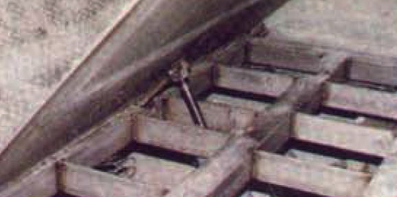
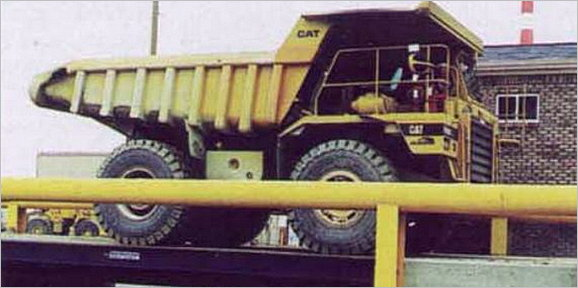
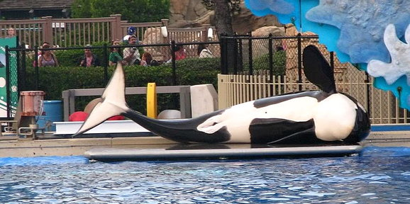

Emery Winslow · Case studies
Where ordinary scales fail: eight harsh sites
Meat plants washed down every night, pits that flood, quarries hit by lightning, load cells under water. These are real applications published by Emery Winslow Scale Company, summarised by HearS with a link to each source.
- Washdown
- Flooding
- Lightning
- Dust and heavy traffic

Why these stories matter in Vietnam
Seafood, meat and food plants in Vietnam wash down daily. Many sites face high humidity, heavy rain and frequent thunderstorms in the rainy season, and quarries, cement and steel yards are dusty and run heavy trucks around the clock. Those are conditions that easily damage electronic load cells, and the conditions these case studies describe.
Each case below is a summary of a case study published on the Emery Winslow website. Customer names, quotes and figures come from those pages; HearS did not take part in these projects. Photos are the manufacturer's product images, not photos of the customers' sites.
The industries in these stories
Animal weighing first — the application Emery Winslow leads with — then the eight cases below, grouped by industry in the order HearS prioritises for Vietnam.
Railways
Wagon and axle weighing at loading terminals: outdoor scales exposed to lightning, dust and heavy traffic. No published Emery Winslow railway case yet — this describes the application, not a customer.
Energy
Tank and vessel weighing at fuel and power sites, where the weighing point can sit inside a classified area. No published Emery Winslow energy case yet — an application, not a customer.
Mining & quarrying
Florida Rock and Rogers Group (Redland Stone): quarry truck scales struck by lightning, loads trimmed while the truck is on the scale.
Animal weighing
Zoos, farms and marine parks: custom systems from orcas in salt water to elephants and small animals — the application Emery Winslow leads with. See the first story below.
SeaWorld & seafood
SeaWorld: hydrostatic load cells permanently submerged, weighing whales and other marine animals.
Food
Plumrose, Boar’s Head and Morgan Foods: nightly washdown, flooded pits, and — before switching — a load cell change almost every day.
Chemical
Corrosive and hazardous process areas: tank weighing with no electronics at the vessel. No published Emery Winslow chemical case yet — an application, not a customer.
Animal weighing · zoos, farms and marine parks
Animal weighing: from orcas in salt water to elephants
Emery Winslow builds custom animal weighing systems on hydrostatic load cells — from a system to weigh orcas in salt water, through heavy-duty systems for elephants, to light-capacity systems for small animals. The cells sit under the platform with no electronics at the scale, so washdown, submersion and lightning do not reach them.
Source: Emery Winslow Scale Company, Animal and Zoo Scales. This is HearS's overview of the manufacturer's animal weighing page; the SeaWorld story below is one customer installation from the same range.
- Harsh factor: salt water, washdown and outdoor exposure
- Answer: non-electronic hydrostatic load cells
- Guarantee: lifetime guarantee against failure from water, washdown, lightning, rodents, power surges and RFI/EMI
Meat processing · nightly high-pressure washdown
Plumrose: a whole shift of washdown
At Plumrose the third shift is an intense high-pressure washdown of all equipment. Before switching, water getting into electronic load cells regularly made them fail, which could stop production or, worse, lead to the wrong amount of an ingredient being added.
“When we need more scales, Hydrostatics will certainly be my first choice.” Dave Inman, Vice President, Plumrose (as quoted by Emery Winslow).
Source: Emery Winslow Scale Company, Plumrose Food case study, published June 2024.
- Harsh factor: high-pressure water on every scale, every night
- Risk: a failed cell can halt the line or corrupt a recipe
- Answer: non-electronic hydrostatic load cells
Deli meats · flooded pits
Boars Head: pit scales that get flooded
Boars Head uses Emery Winslow Model 709 pit scales installed flush with the floor, in several sizes and capacities: some for shipping and receiving, others to pre-weigh rolling vats of product before they go into mixers and grinders. Many processors avoid pit scales because flooded pits damage electronic load cells. These pits do occasionally flood; the hydrostatic load cells were unaffected.
“We get the price difference back many times over in the form of dramatically reduced down-time, fewer repairs and no replacement load cells.”
Source: Emery Winslow Scale Company, Boars Head case study, published June 2024.
- Harsh factor: washdown water and pits that flood
- Installed: Model 709 pit floor scales
- Reported: less downtime, fewer repairs, no replacement load cells

Food processing · daily load cell failures
Morgan Foods: a cell change almost every day
Morgan Foods, a large privately owned food processor in southern Indiana, upgrades its production equipment every year and depends on load cells working correctly. With electronic load cells, its director of engineering said, changing a cell was “almost a daily thing”. Hydrostatic scales are electrically inert, so the elements that usually kill electronic cells do not apply.
“These Hydrostatic load cells proved to be the answer for our application.” Cory Lytle, Director of Engineering, Morgan Foods.
Source: Emery Winslow Scale Company, Morgan Foods case study, published June 2024.
- Harsh factor: wet, cleaned-down food production
- Before: almost daily electronic cell replacements
- After: hydrostatic load cells

Aggregates · lightning strikes and heavy traffic
Rogers Group and Redland Stone: lightning and 1,200 trucks a day
At Rogers Group in southern Indiana, the single load cell in the old scales had to be replaced at least three times a year because of lightning strikes. The aggregate manager estimated savings of about USD 4,000 per year per scale in maintenance after moving to hydrostatic scales.
Redland Stone Products in San Antonio, Texas, has used Emery Winslow scales since 1985. The operation produces more than five million tons of crushed stone a year, with a crushing plant capable of 6,000 tons per hour; its busiest day brought more than 1,200 trucks through the plant. “Weights and measures people come out and check these scales, and in seven years I am not aware of any adjustments needed.”
Source: Emery Winslow Scale Company, Redland Stone Products & Rogers Group case study, published June 2024.
- Harsh factor: lightning, dust and constant heavy trucks
- Before: at least three lightning-related cell replacements a year
- Reported: lower maintenance cost and no adjustments in seven years

Grain elevator · lightning, water and rodents
The Andersons: a 70-foot truck scale since 1986
In the mid-1980s staff from The Andersons visited an Emery Winslow hydrostatic scale at a Campbell Soup tomato processing plant in Napoleon, Ohio. In 1986 the company installed a 70-foot Emery Winslow truck scale at its grain elevator in Findlay, Ohio. The hydrostatic cells are non-electric, and there are no electric cables under the scale for rodents to chew.
“With our Hydrostatic scales, we've significantly reduced the amount of routine maintenance needed.” “We liked it well enough that we've gone with Hydrostatic scales anywhere it's feasible.” David Myles, The Andersons Inc.
Source: Emery Winslow Scale Company, The Andersons case study, published June 2024.
- Harsh factor: outdoor weighbridge, lightning, water, rodents
- Installed: 70 ft (about 21 m) truck scale, 1986
- Reported: significantly less routine maintenance

Marine park · load cells under water
SeaWorld: weighing whales with submerged load cells
Emery Winslow engineers worked with SeaWorld's manager of animal training on a 9 by 15 ft (about 2.7 by 4.6 m) platform with a structural capacity of 40,000 lb (about 18 tonnes). It replaced weighing marine mammals in a sling lifted by a crane. Emery Winslow later supplied further whale scales to SeaWorld, as well as scales for walrus and polar bears.
“The load cells themselves are completely submerged, and only the platform is above water to reduce the effects of wave action.”
Source: Emery Winslow Scale Company, Sea World case study, published June 2024.
- Harsh factor: load cells permanently under water
- Built: custom 9 × 15 ft platform, 40,000 lb structural capacity
- Reported: no more crane-and-sling weighing

Quarry · loading to exact weight
Florida Rock: trimming loads while the truck is on the scale
Florida Rock Industries, a large crushed stone producer, needs to load trucks to the exact weight ordered for short hauls and to top legal road weights for long hauls. Its new scales, combined with a top-off machine, let the weighmaster trim the load while the truck stays on the scale, instead of pulling off to adjust and driving on a second time.
“I can add or remove material in a matter of seconds.” Philip Sanders, weighmaster.
Source: Emery Winslow Scale Company, Pit & Quarry, Florida Rock case study, published June 2024.
- Demand: every truck leaves with the right load
- Installed: new truck scales with a top-off machine
- Reported: no second trip onto the scale

Aviation · weight and balance
El Dorado Airport, Bogotá: weighing aircraft up to a Boeing 747
In 1999 Emery Winslow developed what it describes as the first Automatic Aircraft Weight and Balance Verification System, working with the International Civil Aviation Organization (ICAO). It was installed at El Dorado International Airport in Bogotá, Colombia, and verifies the weight and balance of aircraft up to and including the Boeing 747.
Benefits listed by the manufacturer: improved safety, fuel economy and loading efficiency, with reduced maintenance, noise and pollution.
Source: Emery Winslow Scale Company, Boeing 747 case study, published June 2024.
- Demand: weight and balance of the largest passenger aircraft
- Built: custom verification system, 1999
- Shows: custom engineering well beyond standard scales

All case studies: emerywinslow.com/case-studies, read by HearS on 13/11/2026 and checked again on 15/11/2026. Quotes are reproduced as published by Emery Winslow Scale Company; Vietnamese quotes are HearS translations.
Warranty terms, delivery and any approval needed for use in Vietnam are confirmed in each HearS quotation.
Is your site this harsh?
Tell us what keeps breaking your scales. We reply by email with questions or a proposal.